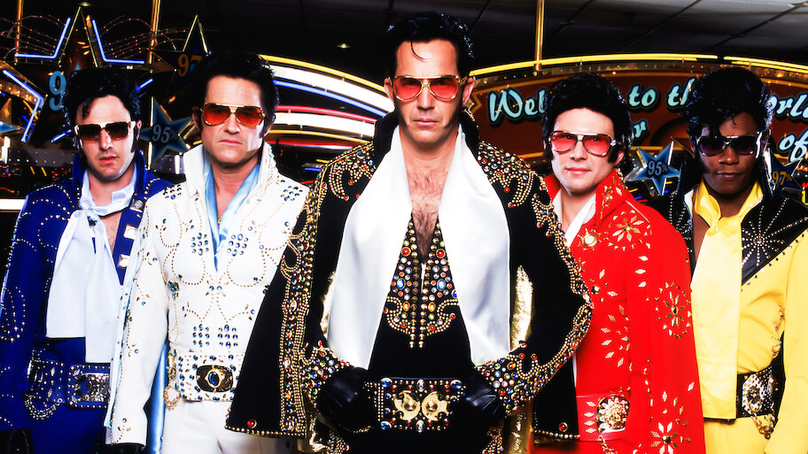
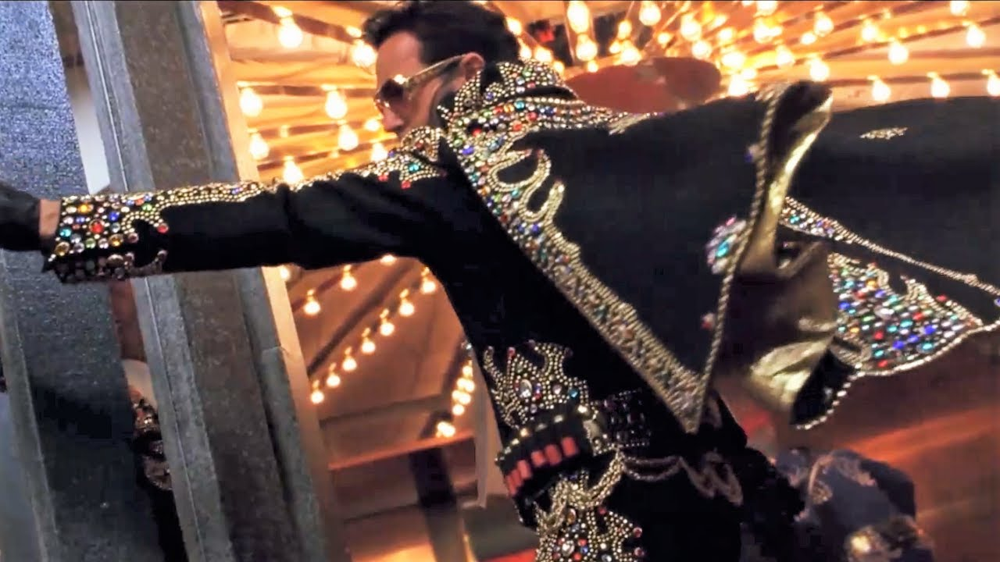
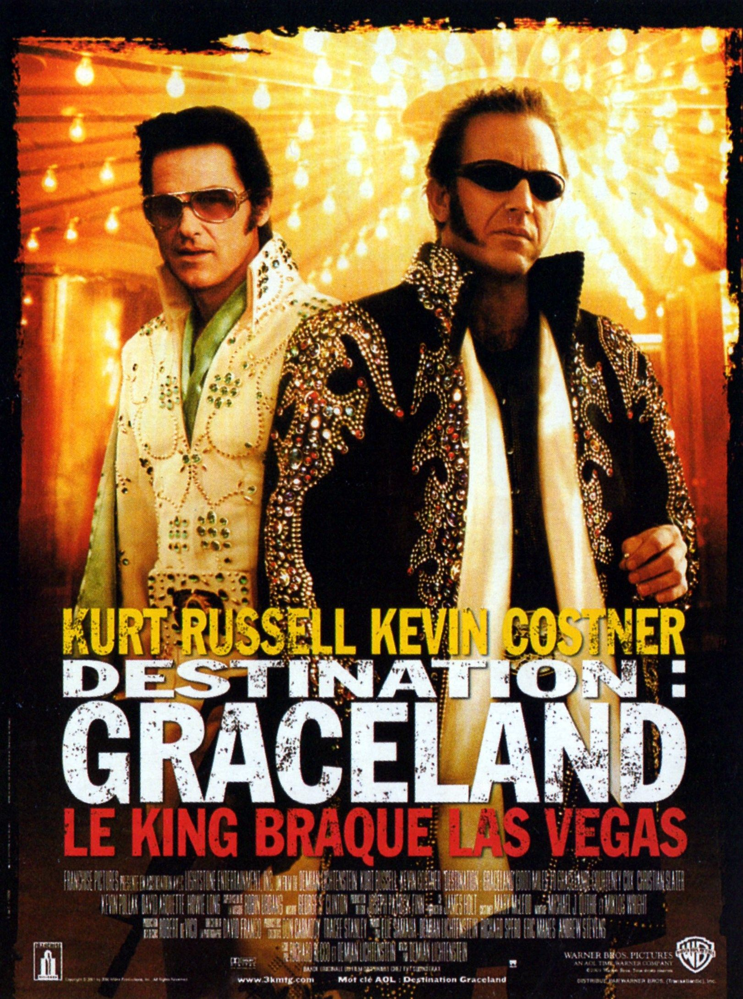

Ce film, je le connaissais de nom depuis sa sortie en 2001.
Je ne l'ai vu que l'année dernière.
Vingt ans d'attente pour un film sur des braqueurs déguisés en Elvis Presley qui se retrouvent à Las Vegas avec une valise pleine de billets et tout le monde à leurs trousses.
Vingt ans. Pour ça.
J'aurais dû le voir bien plus tôt.
Kurt Russell dans le costume du King. Kevin Costner en psychopathe. Las Vegas comme terrain de jeu. Et une énergie de film qui n'a peur de rien — ni du mauvais goût, ni de l'excès, ni de lui-même.
Ce soir, on sort la cassette.
Viva Las Vegas.

Les cinq Elvis — 3000 Miles to Graceland, 2001
3000 Miles to Graceland.
2001. Réalisé par Demian Lichtenstein. Avec Kurt Russell et Kevin Costner.
Un film produit par Warner Bros, sorti en salles en février 2001. Budget de 40 millions de dollars. Box-office américain : 15 millions.
Un échec commercial retentissant.
La jaquette promettait de l'action, Las Vegas, des braqueurs déguisés en Elvis. Ce qu'on trouve à l'intérieur tient cette promesse — et la dépasse dans une direction que personne n'attendait vraiment.
Un film déjanté, excessif, qui assume chaque mauvaise décision avec une conviction totale.
Kurt Russell en Elvis braqueur. Kevin Costner en sociopathe convaincu d'être le fils illégitime du King.
C'est exactement aussi fou que ça en a l'air.
Et c'est précisément pour ça que ça fonctionne.
2001.
Hollywood est en pleine gueule de bois post-années 90. Les blockbusters numériques ont redéfini les attentes du public. Les films d'action physiques, ancrés dans le réel, cherchent leur place dans un paysage saturé d'effets spéciaux.
3000 Miles to Graceland arrive dans ce contexte avec une proposition radicalement différente — pas de super-héros, pas d'effets numériques, pas de franchise. Un braquage à Las Vegas, des costumes d'Elvis, et deux acteurs au sommet de leur carrière qui décident de tout casser.
Kurt Russell — star des années 80 et 90, Escape from New York, The Thing, Tango & Cash — cherche à réinventer son image. Il choisit un rôle qui le place à contre-emploi total : un criminel charismatique, élégant dans sa violence, habillé en King.
Kevin Costner prend le pari inverse. Après Danse avec les loups et The Bodyguard, il est l'acteur le plus bankable de sa génération. En 2001, sa cote a baissé. Il répond en choisissant le rôle le plus sombre et le plus dérangeant de sa carrière — un psychopathe convaincu d'être le fils illégitime d'Elvis Presley.
Demian Lichtenstein réalise son premier long métrage avec un budget conséquent et une liberté totale. Il en profite — peut-être un peu trop selon la critique. Pas assez selon le film lui-même.

Kurt Russell — 3000 Miles to Graceland, 2001
Las Vegas. La semaine de commémoration d'Elvis Presley.
Cinq hommes déguisés en King braquent le casino du Riviera pendant le plus grand rassemblement de fans d'Elvis de l'année. Le camouflage parfait — perdus dans une foule de sosies, invisibles parmi l'invisible.
Le braquage réussit. La suite moins.
Ce qui devait être un coup propre devient rapidement une course-poursuite à travers le désert américain — entre anciens complices qui ne se font plus confiance, agents fédéraux aux trousses, et une valise pleine de billets que tout le monde veut récupérer.
Le film ne se prend jamais au sérieux. Ce n'est pas un défaut — c'est une décision. Chaque séquence pousse le curseur un peu plus loin dans l'excès, dans le délire, dans l'énergie brute d'un film qui a décidé de ne rien retenir.
Kurt Russell porte tout ça avec une élégance décontractée qui rappelle exactement pourquoi on l'aime.
Et Kevin Costner — dans le rôle le plus inattendu de sa carrière — vole chaque scène où il apparaît.
Ce film ne veut pas être grand.
Il veut être intense. Excessif. Inoubliable dans son excès.
Et c'est une ambition parfaitement légitime que la critique de 2001 n'a pas su reconnaître.
3000 Miles to Graceland appartient à une catégorie rare — les films qui assument complètement ce qu'ils sont, sans s'excuser, sans chercher à plaire à tout le monde. Chaque séquence d'action est poussée un cran trop loin. Chaque personnage est un cran trop extrême. Chaque décision narrative est un cran trop audacieuse.
C'est voulu. C'est construit. C'est la proposition du film — et soit on l'accepte, soit on passe à côté de tout.
Kurt Russell comprend ça instinctivement. Il joue Michael avec une élégance de prédateur — dangereux, charismatique, jamais ridicule malgré le costume d'Elvis. C'est une performance physique et tonale d'une précision rare dans ce registre.
Et Costner — c'est là que le film devient vraiment intéressant.
Murphy est l'une des performances les plus sous-estimées de sa carrière. Un sociopathe convaincu de sa propre mythologie, violent sans raison, imprévisible à chaque instant. Costner y met quelque chose de froid et de fascinant que personne ne l'avait encore laissé exprimer.
Ce film est une expérience. Pas pour tout le monde.
Mais pour ceux qui laissent le film exister pour ce qu'il est — c'est quelque chose d'unique.

Destination : Graceland — affiche française, 2001
3000 Miles to Graceland a été massacré à sa sortie.
Pas ignoré — massacré. La critique américaine a été unanimement négative. Trop violent, trop excessif, trop déjanté, trop rien de ce qu'on attendait de Kurt Russell et Kevin Costner réunis pour la première fois à l'écran.
Le public a suivi la critique. 15 millions de dollars de recettes pour un budget de 40 millions — l'un des échecs les plus retentissants de l'année 2001.
Et pourtant le film a une vie après les salles.
En DVD, en câble, en téléchargement — il trouve progressivement un public qui n'avait pas été là au départ. Celui qui cherche quelque chose de différent, quelque chose qui ne ressemble à rien d'autre, quelque chose qui ose.
Mais cette seconde vie n'efface pas le verdict initial. Dans les mémoires collectives, 3000 Miles to Graceland reste un échec — un film raté, un pari perdu, une curiosité de début de décennie.
Il méritait un autre public. Il le trouve maintenant.
Parce que l'excès assumé est une forme d'honnêteté.
3000 Miles to Graceland ne triche pas. Il ne prétend pas être plus sage qu'il n'est, plus profond qu'il n'est, plus respectable qu'il n'est. Il est exactement ce qu'il annonce — un film déjanté, violent, jubilatoire, construit autour d'un concept aussi absurde que brillant.
En 2026, cette honnêteté est précieuse. Le cinéma d'action contemporain est souvent trop conscient de sa propre image, trop soucieux de plaire à tout le monde, trop poli pour vraiment prendre des risques.
3000 Miles to Graceland prend des risques. Tous les risques. Et il les assume jusqu'au bout.
Kurt Russell y est au sommet de ce qu'il peut faire dans ce registre — élégant, dangereux, irrésistible. Et Costner y livre une performance qui mérite d'être réévaluée sérieusement.
J'ai attendu vingt ans avant de voir ce film.
Vingt ans de trop.
C'est exactement le territoire de SOMEDAY — les films qu'on remet à leur place.
3000 Miles to Graceland n'est pas pour tout le monde.
Il le sait. Il s'en fout.
C'est un film qui a choisi son camp dès la première séquence — celui du trop, de l'excès, du refus de la demi-mesure. Et il est resté dans ce camp jusqu'au générique de fin, sans jamais ciller.
La critique de 2001 n'était pas prête pour ça.
Moi non plus, à l'époque. J'aurais peut-être dû l'être.
Mais ce soir — avec vingt ans de recul, avec Kurt Russell en Elvis et Kevin Costner en fou furieux — je comprends ce que ce film voulait être.
Et il l'est.
La cassette est dans le lecteur. On rembobine.
Titre original
3000 Miles to Graceland
Pays
États-Unis
Genre
Action / Thriller
Durée
125 min
Producteur
Warner Bros
Avec aussi
Courteney Cox · Christian Slater
Fil conducteur
Russell I — Saison 1
Box-office
15M$ / Budget 40M$
Regarder l'épisode
SOMEDAY — EP. 10